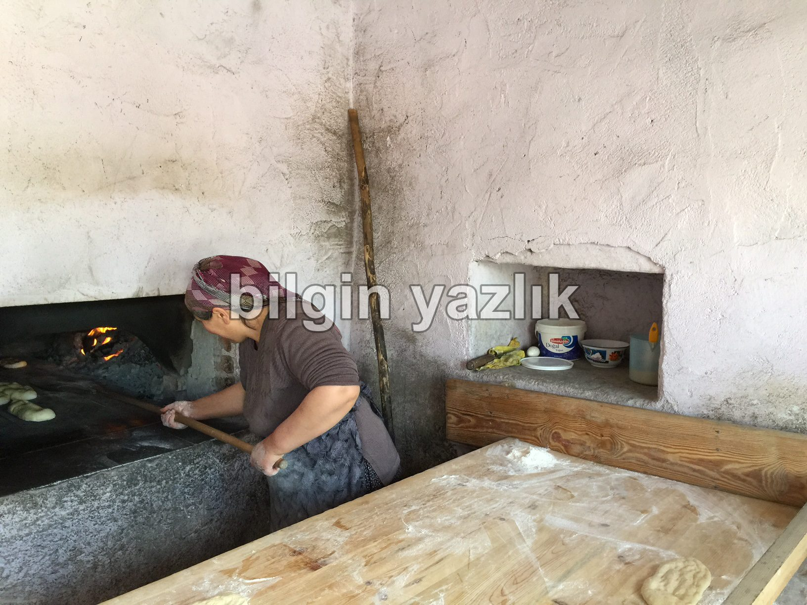
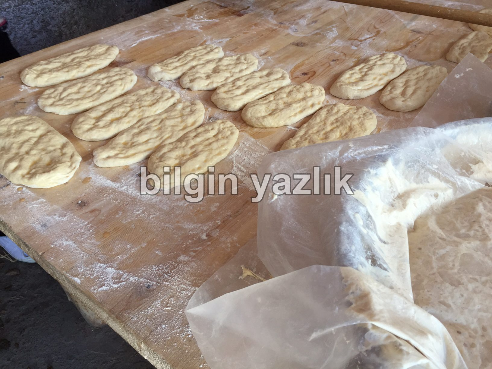
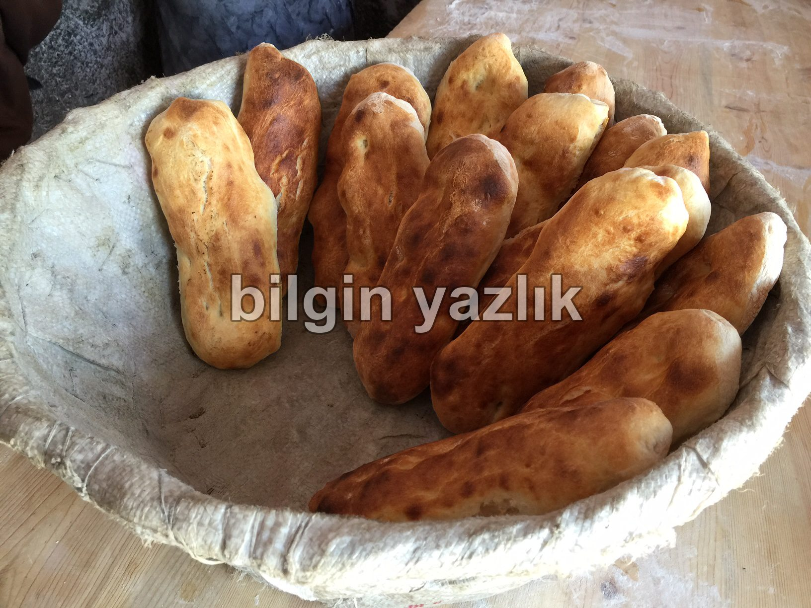
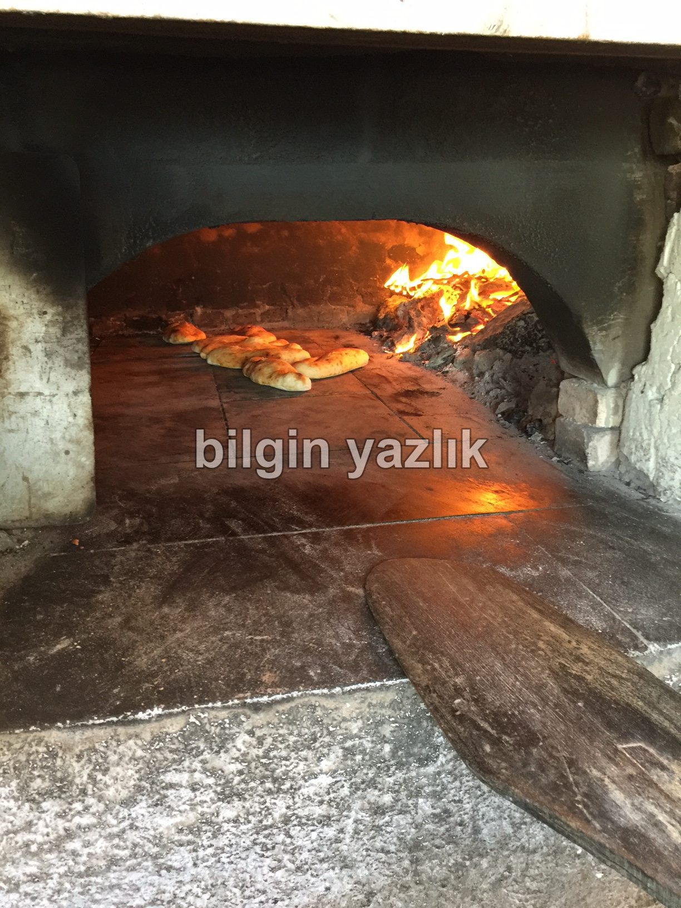
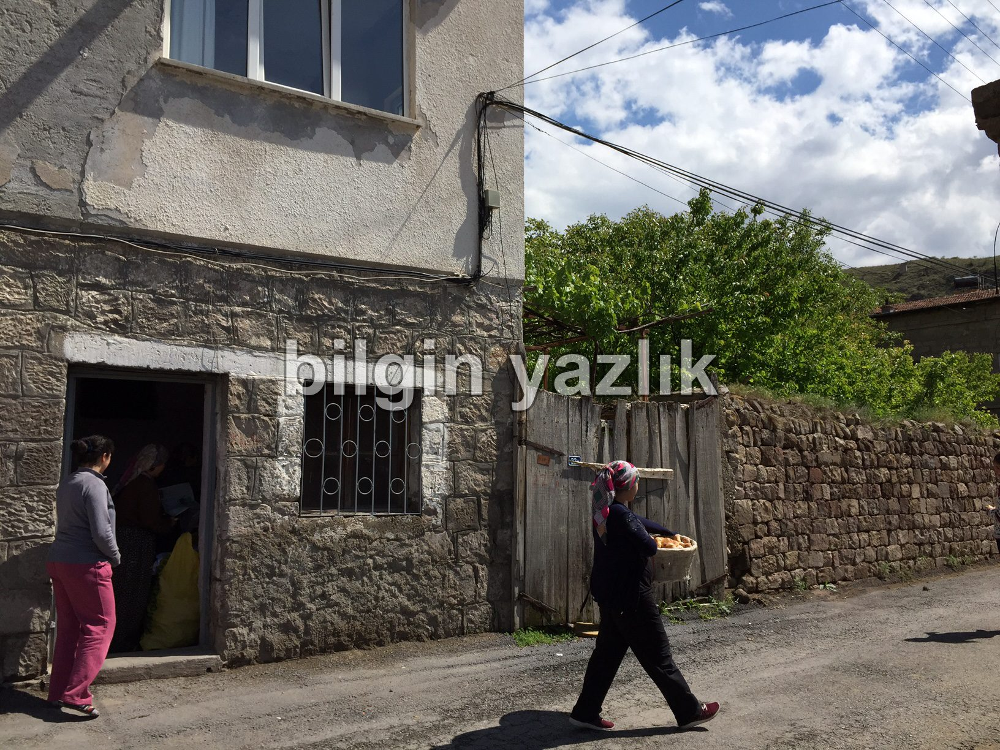

Mancusun (Yeşilyurt) ve Geleneksel Ekmek Fırınları
Güncel adı ile Yeşilyurt Mahallesi, halk tarafından bilinen eski adı ile Mancusun’a düştü yolumuz.
Daracık sokakları, Osmanlı döneminde inşa edilmiş taş evleri ile Kayseri / Gesi’de yer alan büyüleyici bir köy.
Sokaklarında gezerken kendinizi bir an 14. yy’da yaşıyor gibi hissedebileceğiniz güzide bir köy.
Bu köyün kadınlarının, kendi ekmeklerini kendileri pişirme geleneklerini yüzyıllardır değişmeyen yöntemlerle sürdürdüklerini gördüm.
Taştan yapılmış odun fırınları, önceden mayalanmış ekmek hamurları ve fırın yandıktan 30 dk sonra mis gibi sıcak köy ekmeği kokusu.
Mancusun’da karşılaştığım emektar kadınlar, ekmek pişirmenin yüzlerce yıldır bu şekilde yapıldığını kendilerinin de annelerinden öğrendiklerini söylediler.
Fakat, her gün her evde veya her fırında ekmek pişmiyor, benim kadar şanslı iseniz sokaktan yürürken burnunuza gelen mis gibi sıcak ekmek kokusunu takip edin.





Bu yazı taliyol arşivinden taşınmıştır. · özgün kayıt